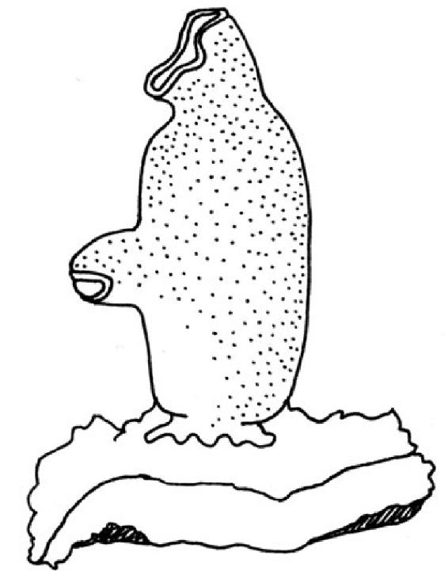
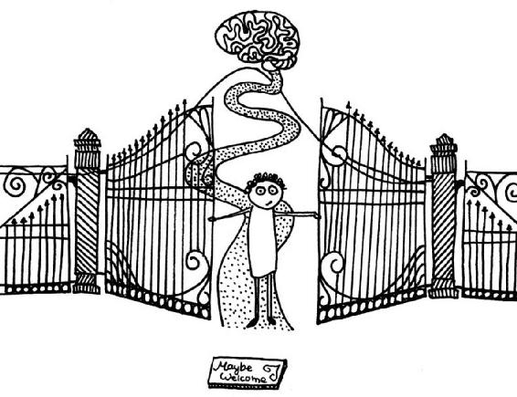

THIS IS A sea squirt.

It may be enlightening to learn the sea squirt’s view on the necessity of having a brain. The sea squirt, like humans, is a member of the chordate phylum. It has a bit of a brain and a kind of spinal cord. The brain blithely sends messages to the rest of the body via the spinal cord and receives interesting information in return. In humans, for example, it might receive an image of a traffic sign from the eyes; a sea squirt’s eyes might tell it when a fish swims by. A human’s brain might receive information from the sensors in the skin about whether it’s cold outside; a sea squirt’s skin sensors can tell its brain about the temperature of the water deeper in the sea. A human might get information about whether certain foods are good to eat . . . and so might a sea squirt.
Equipped with all this information, a young sea squirt navigates the great oceans until it finds a rock that is secure, located in water that is just the right temperature, and surrounded by food. Having found a home, the sea squirt settles down. Sea squirts are sessile animals: once they take up residence, they never move again, no matter what happens. The first thing a sea squirt does after setting up home is to eat its own brain. And why not? It’s possible to live and be a sea squirt without one.
Daniel Wolpert is not only an engineer and medical doctor who has won many academic honors, he is also a scientist who believes the sea squirt’s attitude to having a brain is very significant. His theory is that the only reason for having a brain is to enable movement. On first hearing, that might sound like an annoyingly mundane statement. But perhaps we just consider the wrong things mundane.
Movement is the most extraordinary thing ever developed by living creatures. There is no other reason for having muscles, no other reason for having nerves in those muscles, and probably no other reason for having a brain. Everything that has ever been done in the history of humankind was only possible because we are able to move. Movement is not just walking or throwing a ball. It is also pulling faces, uttering words, and putting plans into action. Our brain coordinates its senses and creates experience in order to produce movement: movement of the mouth or the hands, movement over many miles or over just a few inches. Sometimes, we can also influence the world around us by suppressing movement. But if you’re a tree and can’t choose whether you move or not, you don’t need a brain.
The common or garden sea squirt no longer needs a brain after it has settled in one place. Its time of movement is over, and so its brain is surplus to requirements. Thinking without moving is less useful than having a mouth opening to eat plankton with. The latter influences the balance of nature at least a tiny bit.
We humans are very proud of our particularly complex brains. Thinking about constitutional law, philosophy, physics, or religion is an impressive feat and can prompt extremely sophisticated movements. It is awe-inspiring that our brains are capable of all this. But at some point, that awe wears off, and we hold our brains responsible for everything we experience in life—we think up experiences of well-being, happiness, or satisfaction inside our own heads. When we are insecure, anxious, or depressed, we worry that the computer in our heads might be broken. Philosophizing and physics research are matters of the mind and always will be—but there is more to our self than that.
And it is from the gut that we learn this lesson—the organ that is responsible for little brown heaps and unbidden sounds and smells of all sorts. This is the organ that is currently forcing researchers to rethink. Scientists are cautiously beginning to question the view that the brain is the sole and absolute ruler over the body. The gut not only possesses an unimaginable number of nerves, those nerves are also unimaginably different from those of the rest of the body. The gut commands an entire fleet of signaling substances, nerve-insulation materials, and ways of connecting. There is only one other organ in the body that can compete with the gut for diversity—the brain. The gut’s network of nerves is called the “gut brain” because it is just as large and chemically complex as the gray matter in our heads. Were the gut solely responsible for transporting food and producing the occasional burp, such a sophisticated nervous system would be an odd waste of energy. Nobody would create such a neural network just to enable us to break wind. There must be more to it than that.
We humans have known since time immemorial something that science is only now discovering: our gut feeling is responsible in no small measure for how we feel. We are “scared shitless” or we can be “shitting ourselves” with fear. If we don’t manage to complete a job, we can’t get our “ass in gear.” We “swallow” our disappointment and need time to “digest” a defeat. A nasty comment leaves a “bad taste in our mouth.” When we fall in love, we get “butterflies in our stomach.” Our self is created in our head and our gut—no longer just in language, but increasingly also in the lab.
How the Gut Influences the Brain
WHEN SCIENTISTS STUDY feelings, they start out by looking for something to measure. They draw up scales for suicidal tendencies, test hormone levels to measure love, or set up trials for tablets to treat anxiety. To outsiders, this often appears less than romantic. In Frankfurt, there was even a study that involved scanning the brains of volunteers while a research assistant tickled their genitals with a toothbrush. Such experiments tell scientists which areas of the brain receive signals from which parts of the body. This helps them draw a map of the brain.
So they now know, for example, that signals from the genitals are sent to the upper central part of the brain, just below the crown. Fear is found in the middle of the brain—right between the ears, so to speak. Word formation is located just above the temple. Morality is located behind the forehead, and so on. In order to improve our understanding of the relationship between the gut and the brain, we must trace their communication pathways. How do signals get from belly to brain, and what effect do they have when they get there?
Signals from the gut can reach different parts of the brain, but they can’t reach everywhere. For example, they never end up in the visual cortex at the back of the brain. If they did, we would see visual effects or images of what is going on in our gut. Regions they can end up in, however, include the insula, the limbic system, the prefrontal cortex, the amygdala, the hippocampus, and the anterior cingulate cortex. Any neuroscientists reading this will be up in arms when I roughly define the responsibilities of these brain regions as, respectively, self-awareness, emotion, morality, fear, memory, and motivation. This does not mean that our guts control our moral thinking, but it allows for the possibility that the gut might have a certain influence on it. Scientists need to conduct more laboratory experiments to look more closely at that possibility.
The forced swimming test, carried out on mice, is one of the most revealing experiments performed in the name of research into motivation and depression. A mouse is placed in a small container of water that is too deep for it to reach the bottom with its feet, forcing it to swim around trying in vain to get to dry land. The question is, how long will it keep swimming in pursuit of its aim? This boils down to one of the basic questions of our existence: how intensely are we prepared to strive for something that we believe exists? That might be something concrete, like dry land beneath our feet or high school graduation. Or it might be something abstract, like satisfaction or happiness.
Areas of the brain activated by vision, fear, word formation, moral thought, and genital stimulation.
Mice with depressive tendencies do not swim for long. They simply freeze, apathetically awaiting their fate. It seems inhibitory signals are transmitted more efficiently in their brains than motivational or driving impulses. Such mice also show a stronger reaction to stress. New antidepressants can normally be tested on these mice. If they swim for longer after receiving the medication, it is an indication that the substance under scrutiny might be effective.
Researchers in the team, led by the Irish scientist John Cryan, took this one step further. They fed half their mice with Lactobacillus rhamnosus (JB-1), a strain of bacteria known to be good for the gut. Back in 2011, the idea of altering the behavior of mice by changing the contents of their gut was very new. And, indeed, the mice with the enhanced gut flora not only kept swimming for longer and with more motivation, but their blood was also found to contain fewer stress hormones. Furthermore, these mice performed better in memory and learning tests than their unenhanced peers. When scientists severed their vagus nerve, however, no difference was recorded between the two groups of mice.
The vagus nerve is the fastest and most important route from the gut to the brain. It runs through the diaphragm, between the lungs and the heart, up along the esophagus, through the neck to the brain. Experiments on humans have shown that people can be made to feel comfortable or anxious by stimulating their vagus nerve at different frequencies. In 2010, the European Union approved a medical treatment that uses stimulation of the vagus nerve to help patients suffering from depressive disorders. So, this nerve works something like a telephone connection to the switchboard at a company’s headquarters, transferring messages from staff out in the field.
The brain needs this information to form a picture of how the body is doing. This is because the brain is more heavily insulated and protected than any other organ in the body. It nestles in a bony skull, surrounded by a thick membrane, and every drop of blood is filtered before it is allowed to flow through the regions of the brain. The gut, by contrast, is right in the thick of it. It knows all the molecules in the last meal we ate, inquisitively intercepts hormones as they swim around in the blood, inquires of immune cells what kind of day they’re having, and listens attentively to the hum of the bacteria in the gut. It is able to tell the brain things about us it would never otherwise have had an inkling of.
The gut has not only a remarkable system of nerves to gather all this information, but also a huge surface area. That makes it the body’s largest sensory organ. Eyes, ears, nose, or the skin pale by comparison. The information they gather is received by the conscious mind and used to formulate a response to our environment. They can be seen as life’s parking sensors. The gut, by contrast, is a huge matrix, sensing our inner life and working on the subconscious mind.
Cooperation between the gut and the brain begins very early in life. Together, they are responsible for a large proportion of our emotional world when we are babies. We love the pleasant feeling of a full stomach, get terribly upset when we are hungry, or grizzle and moan with wind. Familiar people feed, change, and burp us. It’s palpably clear that our infant self consists of the gut and the brain. As we get older, we increasingly experience the world through our senses. We no longer scream blue murder when we don’t like the food at a restaurant. But the connection between gut and brain does not disappear overnight, it simply becomes more refined. A gut that does not feel good might now subtly affect our mood, and a healthy, well-nourished gut can discreetly improve our sense of well-being.
The first study of the effect of intestinal care on healthy human brains was published in 2013—two years after the study on mice. The researchers assumed there would be no visible effect in humans. The results they came up with were surprising not only for them, but for the entire research community. After four weeks of taking a cocktail of certain bacteria, some of the areas of the subjects’ brains were unmistakably altered, especially the areas responsible for processing emotions and pain.
Of Irritated Bowels,
Stress, and Depression
NOT EVERY UNCHEWED pea can intervene in the brain’s activity. A healthy gut does not transmit minor, unimportant digestive signals to the brain via the vagus nerve. Rather, it processes them with its own brain—that’s why it has one, after all. If it thinks something is important, however, it may consider calling in the brain.
By the same token, the brain does not transfer every piece of information to the conscious mind. If the vagus nerve wants to deliver information to the extremely important locations in the brain, it must get them past the doorman, so to speak. The brain’s bouncer is the thalamus. When our eyes report to the thalamus for the twentieth time that the same curtains are still hanging at the living-room window, it refuses entry to that information—it is not important for the conscious mind. A report of new living-room curtains is something it would let in, for example. That is not true of everybody’s thalamus, but most people’s.
An unchewed pea will not make it across the threshold from the gut to the brain. The story is different for other stimuli, however. For example, a report of an unusually large intake of alcohol will make it from the belly to the head, where it informs the vomit control center; information about trapped gas will reach the pain center; and the presence of pathogenic substances will be reported to the officer in charge of nausea. These stimuli make it through because the gut’s threshold and the brain’s doorman consider them important. But it is not only bad news that makes it across the border. Some signals can cause us to fall asleep on the couch, contented and full after a big Christmas dinner. We are conscious that some of these signals originate from the belly; others are processed in the subconscious areas of the brain and so cannot be located so clearly.

When a gut is irritated, its connection to the brain can make life extremely unpleasant. This shows up on brain scans. In one experiment, the activity in the brains of volunteers was imaged while a small balloon was inflated inside their intestine. Healthy subjects showed normal brain activity with no notable emotional components. When patients with irritable bowels were subjected to the same procedure, however, there were clear indications of activity in the emotional center of the brain normally associated with unpleasant feelings. So the stimulus was able to cross both barriers in those subjects. The patients felt uneasy, although they had not endured anything untoward.
Irritable bowel syndrome is often characterized by an unpleasant bloated feeling or gurgling in the abdomen, and a susceptibility to diarrhea or constipation. Sufferers also have an above-average incidence of anxiety or depressive disorders. Experiments like the one with the balloon show that feeling unwell and negative emotions can arise via the gut–brain axis when the gut’s threshold is lowered or when the brain insists on having information it would not normally receive.
Such a state of affairs may be caused by tiny but persistent (so-called micro-) inflammations, bad gut flora, or undetected food intolerances. Despite the wealth of recent research, some doctors still dismiss patients with irritable bowel syndrome as hypochondriacs or malingerers because their tests show no visible damage to the gut.
Other diseases affecting the bowel are different. During an acute phase of their condition, patients with a chronic inflammatory bowel disease like Crohn’s disease or ulcerative colitis may have real sores in their bowel wall. With these conditions the trouble is not that even tiny stimuli are transferred from the gut to the brain—their threshold is still high enough to prevent that. The problems are caused by the diseased mucus membrane of the gut. Like patients with irritable bowel syndrome, sufferers of these conditions also show increased rates of depression and anxiety.
There are currently very few—but very good—research teams studying how to make the threshold between the gut and the brain less porous. This is important not only for patients with intestinal problems, but for all of us. Stress is thought to be among the most important stimuli discussed by the brain and the gut. When the brain senses a major problem (such as time pressure or anger), it naturally wants to solve it. To do so, it needs energy, which it borrows mainly from the gut. The gut is informed of the emergency situation via the sympathetic nerve fibers, and is instructed to obey the brain in this exceptional period. It is kind enough to save energy on digestion, producing less mucus and reducing the blood supply.
However, this system is not designed for long-term use. If the brain permanently thinks it is in an emergency situation, it begins to take undue advantage of the gut’s compliance. When that happens, the gut is forced to send unpleasant signals to the brain to say it is no longer willing to be exploited. This negative stimulus can cause fatigue, loss of appetite, general malaise, or diarrhea. As with emotional vomiting in response to upsetting situations, the gut reacts by ridding itself of food to save energy so it is available to the brain. The difference is that real stress situations can continue for much longer than minor upsets. If the gut has to continue to forego energy in favor of the brain, its health will eventually suffer. A reduced blood supply and a thinner protective layer of mucus weaken the gut walls. The immune cells that dwell in the gut wall begin to secrete large amounts of signal substances, which make the gut brain increasingly sensitive and lower the first threshold. Periods of stress mean the brain borrows energy, and, as any housekeeper knows, good budgeting is always better than running up too many debts.
One theory proposed by research bacteriologists is that stress is unhygienic. The altered circumstances stress creates in the gut allow different bacteria to survive there than in periods of low stress. We could say stress changes the weather in the gut. Tough guys who have no problem with turbulence will reproduce successfully—and at the end of the day they are not likely to spread good cheer in the gut. If this theory is true, that would make us not just the victims of our own gut bacteria, but also the gardeners of our inner world. It would also mean that our gut is capable of making us feel the negative effects long after the period of stress is over.
Feelings from down below, especially those that leave a nasty aftertaste, will cause the brain to think twice next time about whether it really wants to hold a speech in front of the entire office, or whether we really should eat that super-hot chili. So the process of making decisions based on gut feeling may involve the gut recalling how it felt in similar situations in the past. If positive lessons could also be reinforced in the same manner, then the way to a lover’s heart really would be through their stomach—and straight to the gut.
The interesting theory that our gut is not only involved in our feelings and in making “gut decisions” but also may influence our behavior is the subject of various research projects. A team at McMaster University in Canada led by Stephen Collins designed an ingenious experiment using two different strains of mice with very well-researched behavioral characteristics. Members of the strain called BALB/c are more timid and docile than those belonging to the NIH Swiss strain, which exhibit more exploratory behavior and gregariousness. The researchers gave the mice a cocktail of antibiotics that affect only the gut, wiping out their entire gut flora. They then fed the animals with gut bacteria typical of the other strain. Behavior tests showed they had swapped roles—the BALB/c mice became more gregarious and the NIH Swiss mice were more timid. This shows that the gut can influence behavior—at least in mice. The result cannot yet be applied to humans. Scientists know far too little about the various bacteria involved, about the gut brain in general, and about the gut–brain axis.
Until scientists have filled those gaps in their knowledge, we can make use of the facts we already know to improve gut health. It starts with the little things like mealtimes, for example, which should be enjoyed without pressure, at a leisurely pace. The dinner table should be a stress-free zone, with no place for scolding or pronouncements like “You will remain at the table until you’ve finished the food on your plate!” and without constant television channel hopping. This is important for adults, but it is vital for small children, whose gut brain develops in parallel with their head brain. The earlier in life mealtime calm is introduced, the better. Stress of any kind activates nerves that inhibit the digestive process, which means we not only extract less energy from our food, we also take longer to digest it, putting the gut under unnecessary extra strain.
We can play around with this knowledge and test it experimentally. There are tablets and medicated chewing gum that prevent travel sickness by numbing the nerves of the gut. When the nausea abates, feelings of anxiety often disappear, too. If unaccountable grumpiness or anxiety can originate in the gut (even without nausea), is it possible that these drugs could be used to banish them? By temporarily numbing a troubled gut, so to speak? Alcohol reaches the nerves of the gut before it reaches those in the brain—so how much of the relaxing effect of that “just one glass of wine” in the evening actually comes from a sedated gut brain? What about the array of bacteria in the wide range of yogurt on our supermarket shelves? Is Lactobacillus reuteri better for me than Bifidobacterium animalis? A team of Chinese researchers managed to show in the laboratory that Lactobacillus reuteri is able to inhibit pain sensors in the gut.
Lactobacillus plantarum and Bifidobacterium infantis could already be recommended as a pain treatment for patients with irritable bowel syndrome. Many patients with a low pain threshold in the gut currently take substances designed to treat diarrhea, constipation, or cramps. That might help with the symptoms, but it does not address the cause of the problem. If, after eliminating possible food intolerances and restocking the gut flora, there is still no improvement, then we must take the problem by the scruff of its neck—or in this case, by the nerve-cell threshold. So far, very few treatments have been scientifically proven to be effective. One of those is hypnotherapy.
Really good psychotherapy is like physiotherapy for the nerves. It eases tensions and teaches us how to move in a more healthy way—at the neural level. Because the nerves of the brain are more complicated creatures than the muscles of the body, a trainer needs to have more creative exercises up his sleeve. Hypnotherapists often use thought journeys and guided imagery techniques. These aim to reduce the intensity of pain signals and alter the way the brain processes certain stimuli. Just like muscles, certain nerves can become stronger with increased use. The therapy does not involve hypnotism as seen in television shows. That would, in fact, be self-defeating, since this kind of therapy relies on the patient being in control at all times. Patients must make sure the hypnotherapist they choose is recognized by a reputable institution.
Hypnotherapy has been shown to be effective in treating patients with irritable bowel syndrome, reducing their reliance on medication—in some cases to zero. This is particularly true of children with this condition. For them, hypnotherapy has been shown to produce a 90-percent reduction in pain, compared with a 40-percent reduction produced by drugs. Some clinics offer specific hypnotherapy for abdominal complaints.
Patients with intestinal disease who also suffer from extreme anxiety or depressive disorders are often recommended antidepressants by their doctor. However, they are rarely told why. And there is a simple reason for that: no doctor or scientists knows. It was not until they noticed the mood-enhancing effects of these drugs that scientists began to explore the mechanisms behind this phenomenon. They still have not come up with a clear answer. For decades, it was thought to be due to an enhancing effect of the so-called happiness hormone serotonin. More recently, depression researchers have also begun investigating another possibility—that such drugs may increase the plasticity of the nerves.
Neuroplasticity is the nerves’ ability to change. It is nerve plasticity that makes puberty such a confusing time for an adolescent brain—so much is still being molded into shape. The possibilities are endless and nerves are constantly firing off messages in all directions in a pubescent brain. This process is not complete until we reach the age of about twenty-five. After that, nerves react according to well-rehearsed patterns. Patterns that have proved useful in the past are retained; others are rejected as failures. This explains the disappearance not only of the inexplicable fits of laughter and temper tantrums of the teenage years, but also of the posters plastering the bedroom walls. After this age, we find it more difficult to deal with sudden change, but the payback is a more stable, calmer disposition. This can also result in negative thought patterns taking root, such as “I am worthless” or “Everything I do goes wrong.” The nervous messages from a worried gut can also become embedded in a person’s mind. If it is the case that antidepressants increase neuroplasticity, they may work by loosening up such negative thought patterns. This is most beneficial when accompanied by effective psychotherapy to help patients resist slipping back into old habits.
The side effects of commercially available antidepressants, such as Prozac, also provide us with important clues about the so-called happiness hormone serotonin. A quarter of patients report typical side effects such as nausea, an initial phase of diarrhea, and constipation when the drug is taken over a long period of time. This is explained by the fact that our gut brain possesses the same neural receptors as the brain in our head. So, antidepressants automatically treat both brains. The American researcher Dr. Michael Gershon takes this line of thought one stage further. He is interested in the possibility of developing effective antidepressants that only influence the gut and do not have an effect on the brain.
That is not as outlandish as it might first seem. After all, 95 percent of the serotonin we produce is manufactured in the cells of our gut, where it has an enormous effect on enabling the nerves to stimulate muscle movement and acts as an important signaling molecule. If its effects on the gut can be changed, the messages sent from there to the brain would also be changed enormously. This would be particularly useful in treating the sudden onset of severe depression in people whose lives are otherwise fine. Perhaps it is their gut that needs a session on the therapist’s couch and their head is not to blame at all.
Anyone who suffers from anxiety or depression should remember that an unhappy gut can be the cause of an unhappy mind. Sometimes, the gut has a perfect right to be unhappy—if it is dealing with an undetected food intolerance, for example. We should not always blame depression on the brain or on our life circumstances—there is much more to us than that.
Where the Self Originates
GRUMPINESS, HAPPINESS, INSECURITY, well-being, and worry do not originate in isolation in the mind. We are human beings, with arms and legs, genitals, a heart, lungs, and a gut. Science’s concentration on the brain has long blinded us to the fact that our self is made up of more than just our gray matter. Recent gut research has contributed significantly to a new, cautious questioning of the philosophical proposition “I think, therefore I am.”
One of the most fascinating parts of the brain that can receive information from the gut is the insula, or insular cortex. This part of the brain is studied by one of the most brilliant brains working in research today: Bud Craig. With superhuman patience, he has spent the last twenty years staining nerve fibers and tracking their paths through the brain. Eventually, he emerged from the lab and gave a one-hour talk revealing his theory that human self-awareness originates in the insular cortex.
The first part of his hypothesis goes like this. The insula receives information about feelings from the entire body. Each piece of information is like a pixel. The insula then organizes these pixels to form an overall image. This image is important because it represents a map of our feelings. So, when we are sitting on a chair, we feel the cheeks of our behind pressed against the seat, and we might also feel cold or hungry, for example. Taken together, this gives the overall picture of a cold, hungry person sitting on a hard chair. We might not find this image particularly great, but it is also not awful—it’s just okay.
Hypothesis, part two. Daniel Wolpert tells us the purpose of the brain is to create movement—irrespective of whether you are a sea squirt searching for a comfy rock beneath the sea or a human being striving for the best life possible. The aim of movement is to bring about an effect. The brain can use the insula’s map to plan meaningful movement. If I am sitting around feeling cold and hungry, other areas of the brain will be motivated to do something to change my situation. I could start shivering, or I could get up and head for the fridge in search of food. One of the main purposes of movement is to shift us constantly toward a healthy equilibrium—from cold to warm, from sad to happy, or from tired to alert, for example.
Hypothesis, part three. The brain is an organ of the body. So, if the insula creates an image of the body, that image must also include the on-board computer in our head. It has some interesting areas, such as those responsible for social empathy, morality, and logic. The social areas of the brain might give rise to negative feelings when we argue with our partner; logic regions might induce despair when we try to solve a difficult puzzle. In order for the insula to create a reasonable image of our self, it probably also takes in perceptions of our environment and experiences from the past. So, when we are cold, we don’t just feel the low temperature, we are able to contextualize the feeling and think such thoughts as “This is weird. I’m cold, but I’m in a well-heated room indoors. Maybe I’m coming down with something?” Or alternatively, “Okay, maybe I shouldn’t be parading around naked in the conservatory in winter.” In this way, humans are able to react to the stimulus of feeling cold in a much more complex way than other animals.
The more information we connect, the cleverer the movements we can make. In this respect, there is probably also a hierarchy among our organs. Information that is particularly important for the maintenance of a healthy equilibrium has more sway in the insula. The brain and the gut are well qualified to take a central role—if not the central role.
So, the insula creates a picture of our entire feeling body. We can then use our complex brain to embellish this image. Bud Craig believes the picture is refreshed approximately every forty seconds. Through time, those images merge into a kind of movie—the film of the self, of our life.
A great deal of what makes up this movie is certainly contributed by the brain—but not everything. It may be time to expand René Descartes’ proposition: “I feel, then I think, therefore I am.”